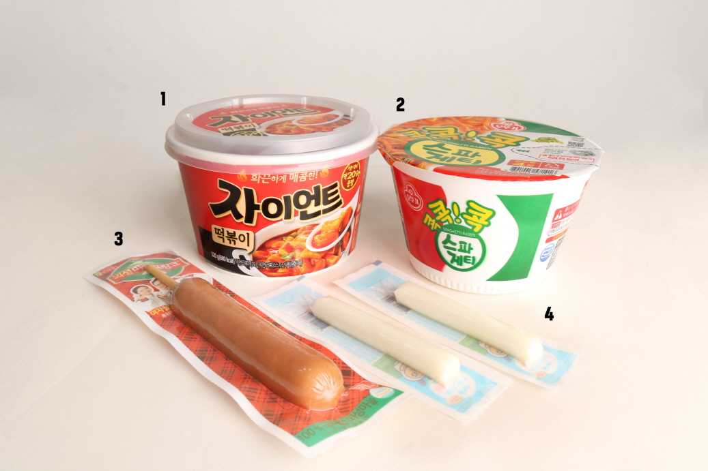

주문 유의사항
-개봉시 칼이나 날카로운 물건으로 열면 물건 퐆장지 파손 위험이 있습니다.
-제품중 치즈는 반드시 냉장보관 하시고 개봉후에는 변질됟기 쉬우니 가급적 빨리 드시길 바랍니다.
-모든 제품은 취향대로 골라 조리하시면 됩니다.
상품설명
편의점 세트로 진행된 제품으로 조리시 약 2인분 입니다.
구성: 자이언트 떡볶이 + 콕콕콕 스파게티 + 의성마늘 프랑크 + 덴마크 스트링치즈
*떡볶이와 소세지 그릐고 스트링 치즈는 기호에 맞게
다른종류 (일반치즈/모짜렐라치즈/비엔나 소세지등)으로 바꾸어서 드실수 있습니다.
마크정식이란?
갓세븐의 팬들은 마크를 검색할때 마다 검색 결과에 게임 마인크래프트가
먼저 뜨는 것에 지쳐있었고, 많은 팬들이 마크의 인지돋가 올라서 마인크래프트보다
먼저 뜨기를 소망하던 와중, 한팬이 마크의 인지도를 올리려는 목적으로 나름
파급력이 큰 다음 카페 여성시대에 마크정식이라는 조리법을 만들어 올렸고, 이는 금세
유명세를 탔고, 지금 우리의 마크정식 레시피가 탄생하게 되었습니다.
쭉쭉 늘어나는 고소하고 부드러운 치즈와
다양한 소스양념으로 베인 새콤달콤한 면의 조화
그 속에 쏙쏙 숨겨진 소세지를 찾아먹는 재미까지!
과제처럼 늘어나는 치즈,
업무처럼 불타는 면,
인간관계처럼 수많은 소세지
모두 먹어 없애버리세요!
조리방법
1.국물떡볶이에 소스를 부어줍니다.
2.떡볶이에 물얼 넣고 전잘레인지에 돌려(1~2분)조리해줍니다.
3.콕콕콕 스파게티면을 개봉하여 건더기 후레이크를 넣고, 물을 넣어 조리해줍니다.
4.삶아진 스파게티 면에 소스와 치즈가루를 넣어줍니다.
5.삶아진 면과 소스가 서루 잘 섞이도록 섞어줍니다.
6.미리 조리된 떡볶이에 잘섞은 스파게티면을 넣어서 합쳐줍니다.
7.소세지를 조각조각 먹기 좋은 크기로 잘라 넣어줍니다.
8.스트링치즈2개를 이등분하여 격자무늬로 올려줍니다.
치즈가 녹을수 있도록 전자레인지에 1~2분 정도 돌려주면 완성!
쭈욱쭈욱 늘어나는 치즈와 함께 맛있는 마크정식을 즐기세요!
상품구성
1.편의점 국물떡볶이(자이언트 떡볶이)
2.콕콕콕 스파게티
3.편의점 소세지(의성마늘 프랑크)
4.스트링치즈2개
화끈하게 맛볼수 있는 매콤한 맛과
은근히 맛볼수 있는 달달한 소스의
조화가 맛있게 어우러진 떡볶이를
맛있게 즐겨보세요.
달달하고 새콤한 스파게티 소스가,
떡볶이와 어우러져 더 색다른 맛을 냅니다.
의성 마늘 프랑크는 고기 함유량이 높아 더 깊고 진한 소세지 맛을 느낄수 있습니다.
쭈욱쭈욱 늘어나는 스트링 치즈는 고소하고 부드러운 식감을 선사합니다.